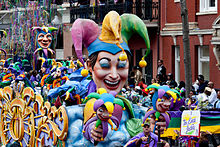

Mardi Gras History
Celebration
The holiday of Mardi Gras is celebrated in southern Louisiana, including the city of New Orleans. Celebrations are concentrated for about two weeks before and through Shrove Tuesday, the day before Ash Wednesday (the start of lent in the Western Christian tradition). Mardi Gras is French for Fat Tuesday, but the season actually begins on Kings Day (12th Night), January 6th, and extends until midnight before Ash Wednesday. Club, or Krewe, balls start soon after, though most are extremely private, with their Kings and Queens coming from wealthy old families and their courts consisting of the seasons debutantes. Most of the high society Krewes do not stage parades. As Fat Tuesday gets nearer, the parades start in earnest. Usually there is one major parade each day (weather permitting); many days have several large parades. The largest and most elaborate parades take place the last five days of the Mardi Gras season. In the final week, many events occur throughout New Orleans and surrounding communities, including parades and balls (some of them masquerade balls).
Early history
The first record of Mardi Gras being celebrated in Louisiana was at the mouth of the Mississippi River in what is now lower Plaquemines Parish, Louisiana, on March 2, 1699. Iberville, Bienville, and their men celebrated it as part of an observance of Catholic practice. The date of the first celebration of the festivities in New Orleans is unknown. A 1730 account by Marc-Antoine Caillot celebrating with music and dance, masking and costuming (including cross-dressing). An account from 1743 that the custom of Carnival balls was already established. Processions and wearing of masks in the streets on Mardi Gras took place. They were sometimes prohibited by law, and were quickly renewed whenever such restrictions were lifted or enforcement waned. In 1833, Bernard Xavier de Marigny de Mandeville, a rich plantation owner of French descent raised money to fund an official Mardi Gras celebration. James R. Creecy in his book Scenes in the South, and Other Miscellaneous Pieces describes New Orleans Mardi Gras in 1835

21st centuries
In 1979, the New Orleans police department went on strike. The official parades were canceled or moved to surrounding communities, such as Jefferson Parish, Louisiana. Significantly fewer tourists than usual came to the city. Masking, costuming, and celebrations continued anyway, with National Guard troops maintaining order. Guardsmen prevented crimes against persons or property but made no attempt to enforce laws regulating morality or drug use; for these reasons, some in the French Quarter bohemian community recall 1979 as the city's best Mardi Gras ever. In 1991, the New Orleans City Council passed an ordinance that required social organizations, including Mardi Gras Krewes, to certify publicly that they did not discriminate on the basis of race, religion, gender or sexual orientation, to obtain parade permits and other public licenses.Shortly after the law was passed, the city demanded that these krewes provide them with membership lists, contrary to the long-standing traditions of secrecy and the distinctly private nature of these groups. In protest—and because the city claimed the parade gave it jurisdiction to demand otherwise-private membership lists—the 19th-century krewes Comus and Momus stopped parading. Proteus did parade in the 1992 Carnival season but also suspended its parade for a time, returning to the parade schedule in 2000.

Effects "Katrina"
The devastation caused by Hurricane Katrina on August 29, 2005 caused a few people to question the future of the city's Mardi Gras celebrations. Mayor Nagin, who was up for reelection in early 2006, tried to play this sentiment for electoral advantage[citation needed]. However, the economics of Carnival were, and are, too important to the city's revival. The city government, essentially bankrupt after Hurricane Katrina, pushed for a scaled back celebration to limit strains on city services. However, many krewes insisted that they wanted to and would be ready to parade, so negotiations between krewe leaders and city officials resulted in a compromise schedule. It was scaled back but less severely than originally suggested.
Mayor of New Orleans
LaToya Cantrell (née Wilder; born April 3, 1972) is an American politician serving as the Mayor of New Orleans, Louisiana since May 7, 2018. A Democrat, Cantrell is the first woman to hold the office. Before becoming mayor, Cantrell represented District B on the New Orleans City Council from 2012–2018
Political Career
In 2012, Cantrell declared her candidacy for the New Orleans City Council seat
vacated when former District B
representative Stacy Head won an election to an at-large position. After the November election,
candidate Dana Kaplan
and Cantrell advanced to a December runoff, which Cantrell won with 54 percent of the vote.
Cantrell served out the
balance of Head's term, and was unopposed for a full four-year term in 2014.
As a council member, Cantrell focused on health, housing, and criminal-justice issues. She
introduced a bill banning
smoking at restaurants and bars within New Orleans, citing the health effects of secondhand
smoke on service industry
workers.The council unanimously passed the bill in 2015.
Also in 2015, Cantrell began work to open a low-barrier homeless shelter, a move that was
objected to by residents
because of its proposed placement in Central City, New Orleans. Instead, the shelter was moved
to the downtown site of
the former VA Hospital. In 2017, Cantrell introduced legislation with at-large council
member Jason Williams to
register and inspect rental units in the city.
As a member of the Criminal Justice Committee, Cantrell has participated in efforts to install
crime cameras in her
district, assess the effectiveness of citywide anti-gun-violence campaigns, and address
understaffing at the New Orleans
Police Department.
Cantrell was inaugurated as mayor on May 7, 2018, the first woman to
hold the position in the city's history.[28] Once
in office, she established a new Office of Youth and Families, with the goal of creating a
strategic plan to address
families in crisis in the city. Cantrell also founded a Gun Violence Reduction Council, tasked
with finding solutions to
violent crime.[29] Starting with a push to rededicate hotel taxes collected within the city for
city use, Cantrell has
focused on her #fairshare initiative to improve city infrastructure, public transportation,
public parks, and green
spaces.[30] As part of that initiative, in October 2018 the City of New Orleans filed a lawsuit
against four opioid
manufacturers and distributors.
During the 2019 session of the Louisiana Legislature, Cantrell negotiated the Fair Share
Agreement with Governor John
Bel Edwards and city, state, and tourism officials. The agreement secured $50 million in upfront
funding for the city's
infrastructure needs as well as $26 million in annual recurring revenue for the city.
Following the approval of the
Fair Share Agreement, New Orleans voters approved 3 of the 4 proposals Cantrell and the City
Council put on the ballot
in the 2019 general election. Voters approved a $500 million bond sale and a tax on short-term
rental properties, as
well the establishment of a Human Right Commission under the New Orleans Home Rule Charter.